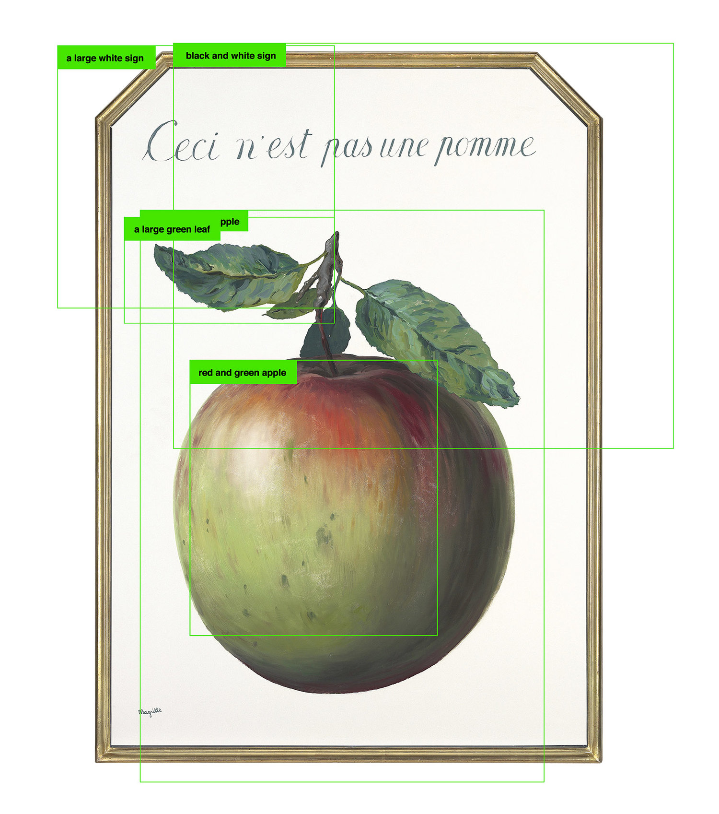
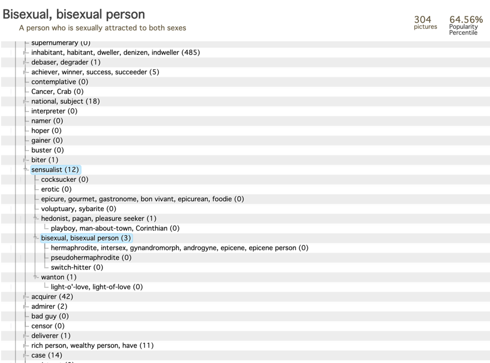
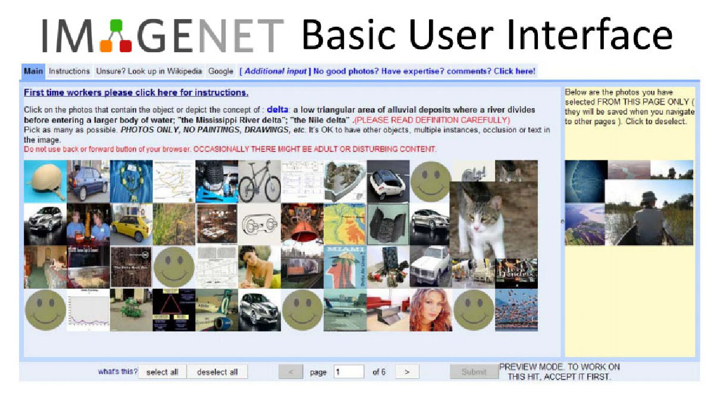
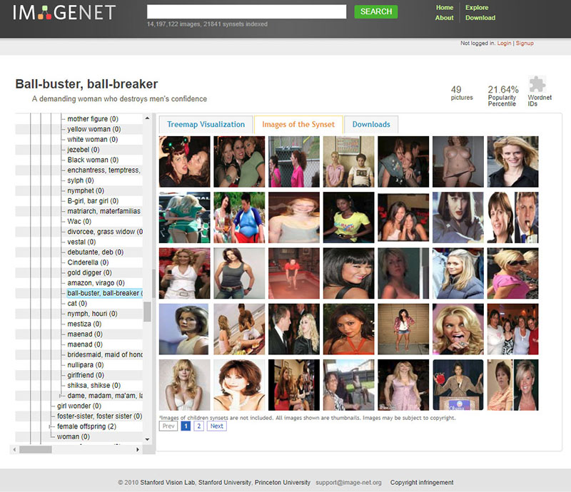
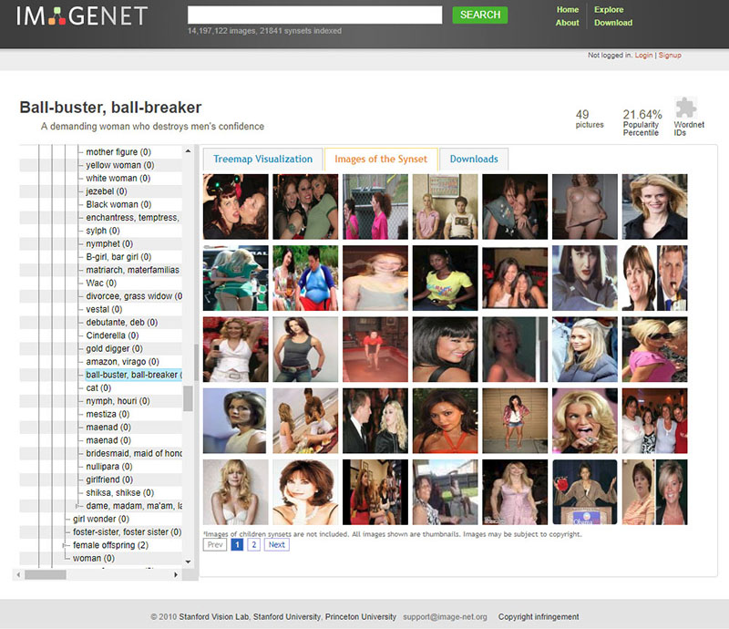
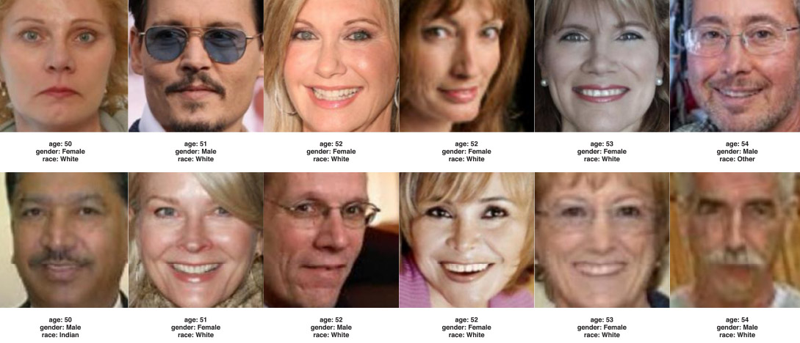
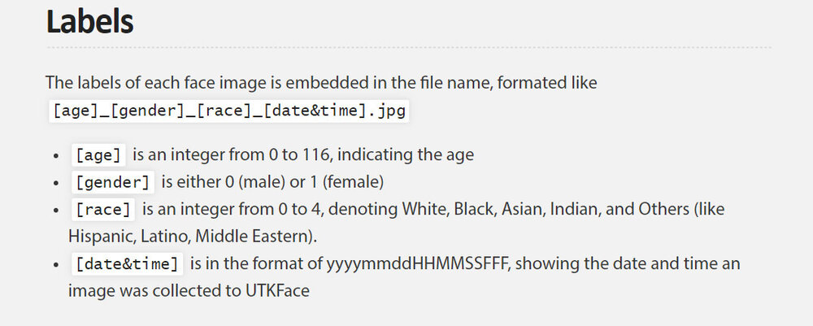
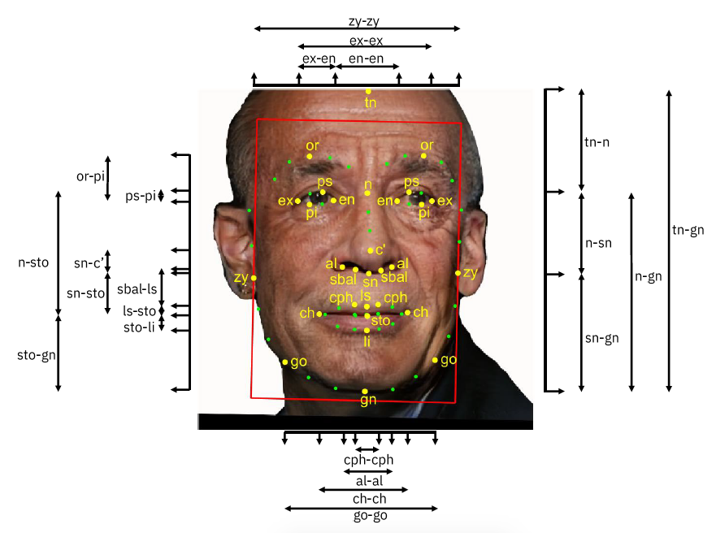
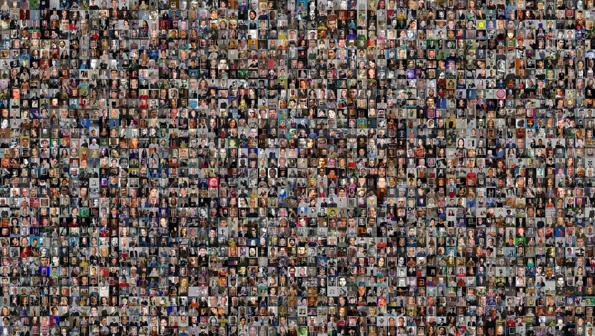
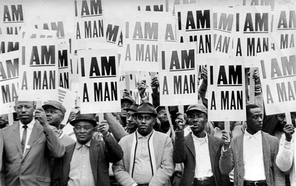

Ontological Analysis
Excavating AI is a meticulous investigation into how machine learning systems inherit and perpetuate cultural assumptions through the images used to train them. Rather than treating datasets as neutral resources, the project unpacks their hidden architectures, taxonomies, and the ways they encode power, identity, and bias. Each section visually and critically exposes a layer of the infrastructures that sustain computer vision.
-
Training AI
The project begins by comparing artworks to show how images can hold many meanings. Agnes Martin’s White Flower and Magritte’s The Treachery of Images reveal how labels never fully capture what an image is or does. This points out that AI systems rely on naming and sorting to make sense of pictures. But the gap between an image and its label is always there. This gap is a core problem in supervised learning. It helps explain why AI can misread or oversimplify visual experience. -
Anatomy of a Training Set
Using ImageNet as an example, the project shows how millions of pictures are sorted and labeled by paid workers on Mechanical Turk. These platforms are part of the hidden labor behind datasets. One image shows the interface where workers assign tags. Another highlights the label “Hermaphrodite,” which exposes harmful and outdated ideas still embedded in the system. This reveals that bias is not rare but common. Data collection always carries traces of culture and prejudice.  -
Categories and Image Selections from “Person” Classes, ImageNet
The project gathers examples of ImageNet’s “Person” categories like “Accused,” “Kleptomaniac,” and “Anti-Semite.” The faces are partly covered to show that these labels turn real people into harmful types. This evidence shows how classification systems create stereotypes. The images prove that bias is structural, not just an accident. They show how datasets can reproduce stigma and exclusion. This problem is central to computer vision. 

-
UTK: Making Race and Gender from Faces
The UTKFace dataset shows how AI systems assign simple labels like “White Male” or "Indian Male" to people’s faces. This practice flattens complex identities into fixed categories. The project explains how these labels echo the history of racial pseudoscience. The images make this process visible. They show how old ideas about difference get encoded into new technologies. This raises questions about who decides how identity is defined.  -
IBM's Diversity in Faces
IBM tried to build a fairer dataset by adding details about facial symmetry, craniofacial landmarks, and skin tone. But the project shows how even these efforts still divide people into measurable traits. The dataset still uses binary gender and fixed labels. This example proves that even improvements can keep old ideas in place. The images show how fairness can become another form of control. This challenges simple claims about bias-free AI. -
Epistemics of Training Sets
This section questions the idea that visual data can be perfectly sorted or fully understood. Excavating AI argues that datasets always carry the worldviews and politics of their makers. Every choice about labels, categories, and images reflects power. The project shows that knowledge itself is shaped by culture and context. This raises deeper questions about objectivity. It invites us to think about what data leaves out. -
Missing Persons
A photo from the MS-Celeb dataset shows the millions of faces that were removed after backlash over consent and privacy. This removal is a reminder that AI systems are built on unsteady ground. The disappearance of data is itself a record of conflict. It shows how power and ethics collide in dataset construction. The project uses this absence as evidence. It calls for accountability and transparency. -
Conclusion: Who Decides?
The project ends with a photo of Memphis sanitation workers holding “I AM A MAN” signs. This moment connects the right to name yourself to the ethics of AI. Excavating AI argues that labeling is always about power. Just as people have fought for the right to define their identity, AI systems define people without their say. The work asks who gets to decide what names, categories, and labels mean. It shows how this question links past and present struggles.
Historical and Contextual Analysis
This timeline situates Excavating AI (2019) within the critical discourse on AI ethics, dataset transparency, and facial recognition bias from 2018 through 2025. It highlights key studies, publications, and events that have shaped ongoing debates. Hover over each point in the timeline to read detailed insights into these pivotal moments.
Visual and Aesthetic Representation
Excavating AI uses a minimalist, precise visual language to communicate its critical message. With clean typography, subdued grayscale palettes, and documentary-style imagery, the project foregrounds the raw dataset content, thousands of labeled images arranged in dense taxonomic grids. This forensic aesthetic reveals the scale and impersonal nature of data collection, emphasizing how individuals are reduced to abstract categories within AI training datasets.
Visually, the project materializes the hidden systems of classification, bias, and power embedded in large-scale datasets, making visible the structural violence often overlooked in machine learning. The representational style serves as both documentation and critique, turning the data itself into a subject of scrutiny.
While earlier conceptual artists like Harun Farocki pioneered visual critiques of surveillance and media systems, Excavating AI also draws on more recent critical precedents in data science and AI ethics. It aligns with projects like Algorithmic Justice League (led by Joy Buolamwini), Data & Society’s visual reports, and artists like Lauren McCarthy and Addie Wagenknecht who explore AI and data through immersive installations and interactive media.
Moreover, the project connects to emerging communities of critical data visualization practitioners, such as those featured in the Mozilla Festival’s Open Data Visualizations or the Information is Beautiful Awards, who use minimalist and data-driven aesthetics to surface social and political implications of technology.
In this way, Excavating AI situates itself within a vibrant interdisciplinary ecosystem that combines art, design, activism, and research to interrogate and challenge the power dynamics of AI systems. Its aesthetic choices are not just stylistic but strategic, using visual clarity and scale to provoke reflection on the ethical foundations and societal impact of machine learning datasets.